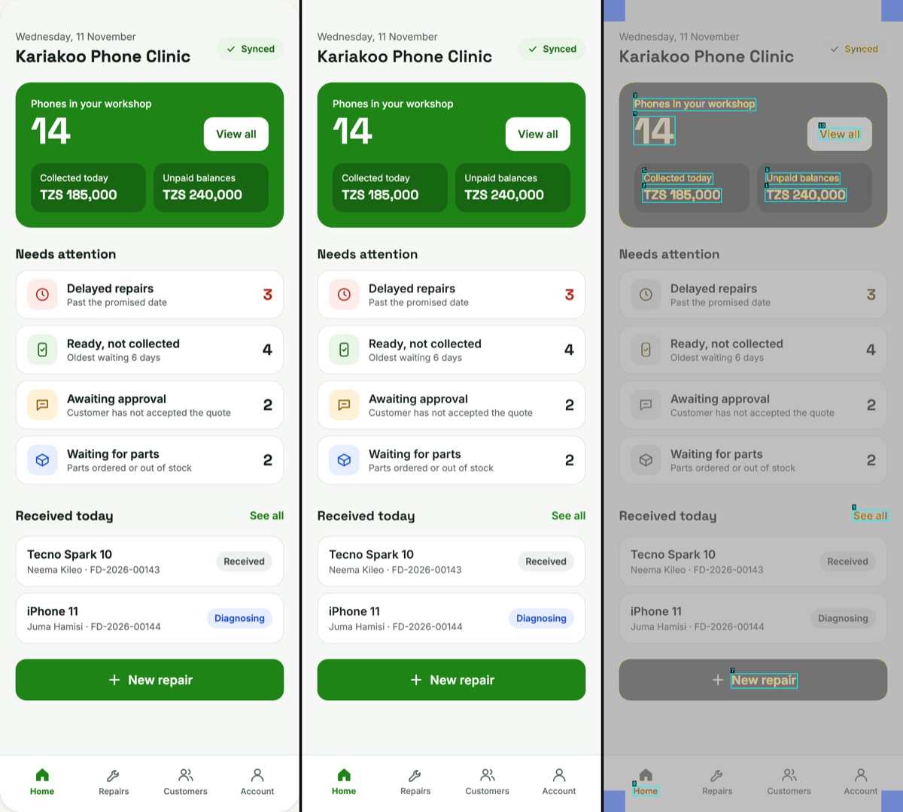
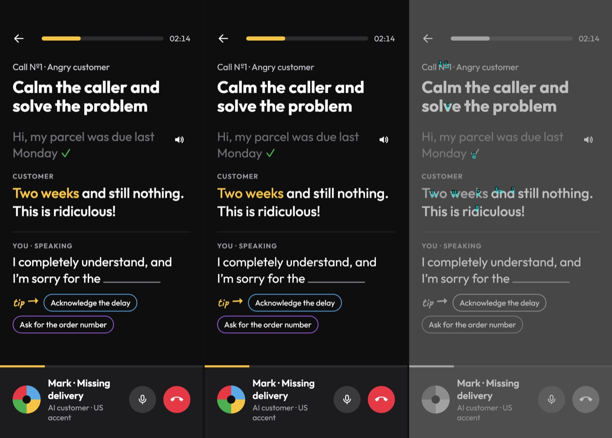
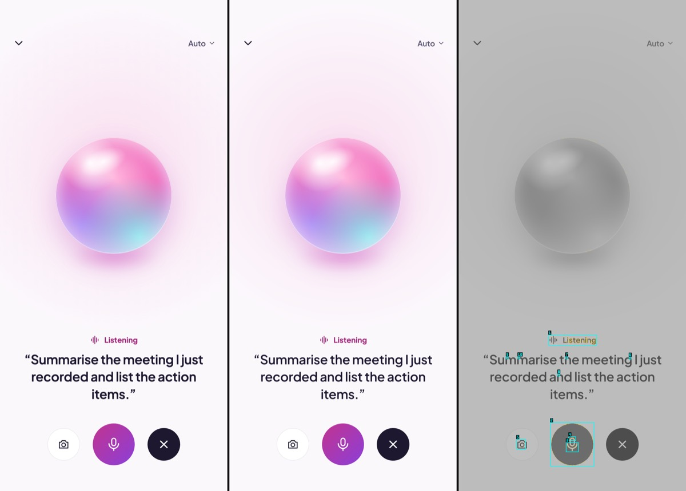
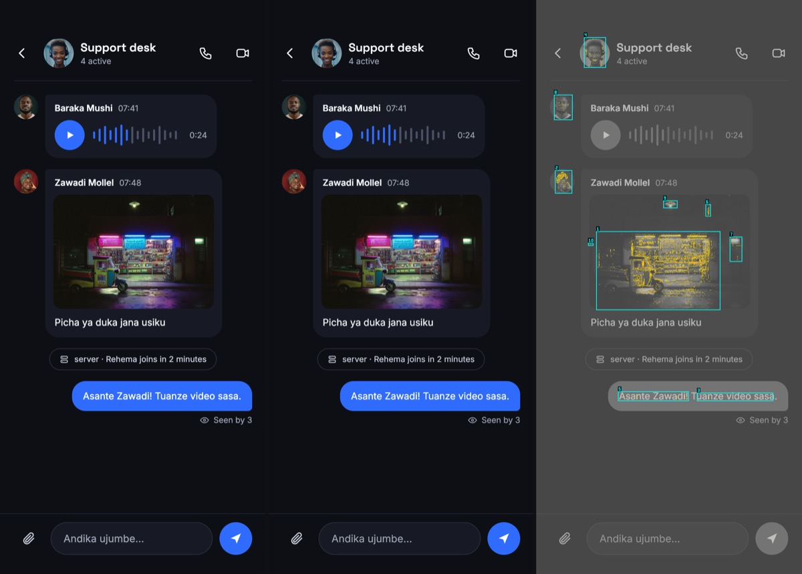

Designs, checked
Morningstar draws every pixel itself, and every designed screen is tested against its design's picture. When a design needs something the framework can't draw yet, you add it to the framework: the renderer is small, every decision in it is recorded in an architecture decision, and its pixel tests tell you, or your AI agent, when it's right.
This page shows the evidence: four designs made by others, 32 screens, each compared with the design.
Design, render, difference
Each picture shows, left to right, the design as Chrome draws its HTML, the app's frame from Morningstar's renderer, then a heat map of where the two differ, with the worst regions boxed. Each app's screenshot program (--diff) writes these on a Mac, with no phone.

FundiDesk, a phone-repair shop, twelve screens. The dashboard: summary cards, two lists and a tab bar. 0.361% of its pixels differ, almost all of it in text, which Morningstar rasterises a little differently from Chrome. The light-on-green figures show it most.

CallReady, call-centre practice, five illustrated screens with turned elements, multi-colour vector pictures and text effects. The live call: 0.006%.

Atlas, an AI assistant, ten screens with radial gradients, blur and inner shadows. The voice screen: 0.051%.

Barua Talk, rooms, chat and calls, five screens with photographs beside the drawing. A room's chat is the worst of all 32 screens, at 0.690%. Most of that is the photograph of the shop, which Morningstar scales a little differently from Chrome.
Every screen
App Screen Differ Mean error
fundidesk 01-splash 0.225% 0.027
fundidesk 02-onboarding 0.211% 0.041
fundidesk 03-login 0.158% 0.023
fundidesk 04-create-account 0.088% 0.020
fundidesk 05-verification 0.087% 0.015
fundidesk 06-shop-setup 0.136% 0.024
fundidesk 07-dashboard 0.361% 0.053
fundidesk 08-repairs-list 0.178% 0.040
fundidesk 09-new-repair 0.344% 0.046
fundidesk 10-repair-details 0.272% 0.045
fundidesk 11-record-payment 0.246% 0.036
fundidesk 12-tracking 0.259% 0.052
callready 01-welcome 0.009% 0.015
callready 02-home 0.013% 0.042
callready 03-live-call 0.006% 0.015
callready 04-call-report 0.037% 0.030
callready 05-premium 0.008% 0.017
atlas 01-onboarding 0.048% 0.120
atlas 02-sign-in 0.131% 0.030
atlas 03-home 0.051% 0.097
atlas 04-chat 0.009% 0.039
atlas 05-model-picker 0.017% 0.101
atlas 06-live-voice 0.051% 0.125
atlas 07-explore 0.073% 0.041
atlas 08-plans 0.160% 0.046
atlas 09-home-simplified 0.051% 0.097
atlas 10-chat-simplified 0.009% 0.039
barua-talk 01-home 0.085% 0.050
barua-talk 02-room 0.690% 0.099
barua-talk 03-incoming 0.015% 0.164
barua-talk 04-video-call 0.286% 0.303
barua-talk 05-phone-call 0.050% 0.028
32 screens. Median 0.087% of pixels differ, worst 0.690%.Differ is the share of pixels whose colour differs visibly: by more than 2 on a scale where 0 is identical and 100 is black against white, after allowing one pixel of anti-aliasing at edges. Mean error is the average difference over all pixels on that scale.
The limits in each app's tests/fidelity.rs are these measured numbers, not targets someone chose. A change that makes any screen look less like its design fails the tests. Each app's SCREENS.md says what the remaining difference consists of.
Do it yourself
The same loop works for your own design: render, compare, fix the worst region, render again. Design to code walks through it, and Building screens covers writing the screen.
To produce this page again: tools/docs-screenshots.sh fidelity, then python3 tools/build-docs.py.
What this does not show: a frame on a Mac is not a phone. How the screens behave on a device is tracked in Platform status.